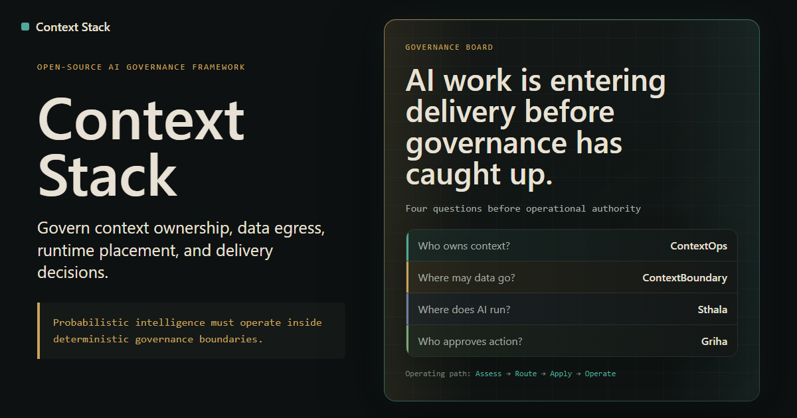

The problem
That lets probabilistic systems directly own deterministic consequences: the root cause of prompt injection, unsafe automation, context contamination, and authority confusion.
"Probabilistic intelligence must operate inside deterministic governance boundaries."
The context-stack separates interpretation from authority: intelligence proposes, governance validates, execution authorizes.

What this is
The AI Governance Stack is an open-source architecture for building AI systems where models can reason, interpret, and narrate, but deterministic software remains responsible for validation, policy, execution, logging, and approval. It is designed for teams that want useful AI behavior without giving probabilistic output unchecked authority over real-world consequences.
The stack
Griha
Policy-bounded AI execution for home and edge. Inherits all three governance principles in a working system. The doctrine made real.
Proof of concept - GitHub
Architecture
Governance principles
Authority boundaries
LLMs may interpret intent and narrate results. LLMs may not directly authorize irreversible side effects, own computation outcomes, bypass deterministic validation, or infer trust beyond what is explicitly declared.
Operational invariants
The narrate/compute split is absolute: no exceptions across any project. Every egress flow is tier-classified before crossing a boundary. Human override always exists for critical domains. No unlogged actions.
Failure philosophy
This stack assumes LLMs will misinterpret, hallucinate, and exceed their authority if unconstrained. The architecture is designed for that assumption, not against it. Safety comes from deterministic boundaries, not model quality.
What LLMs must not infer
Autonomy is not a goal: bounded execution is. Speed does not trump governance. Missing policy means denied. Probabilistic output never carries deterministic authority.